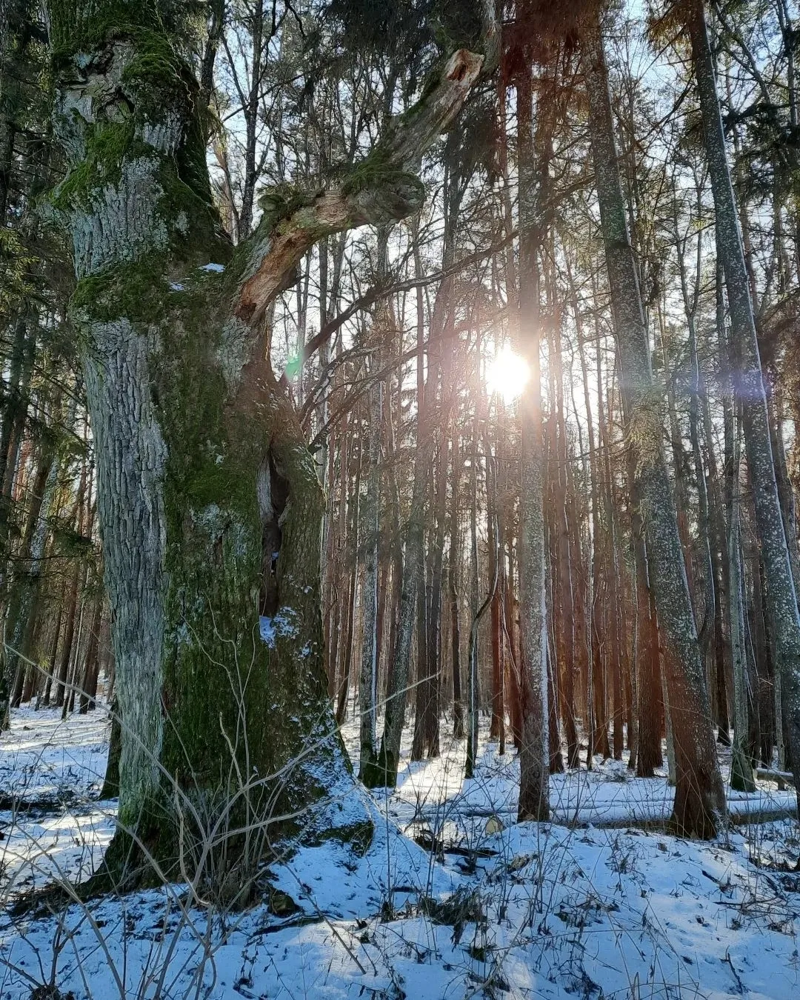
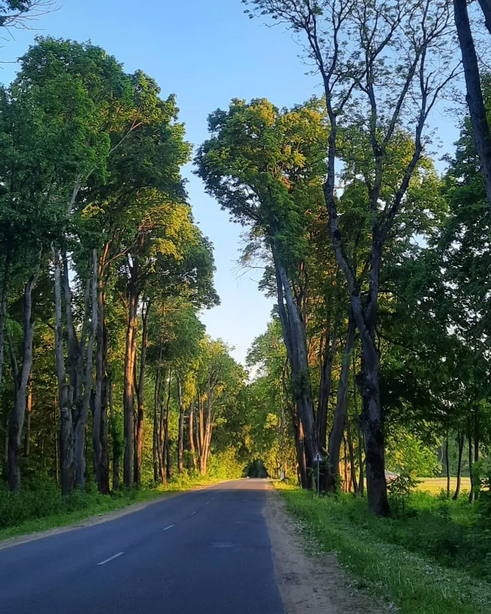
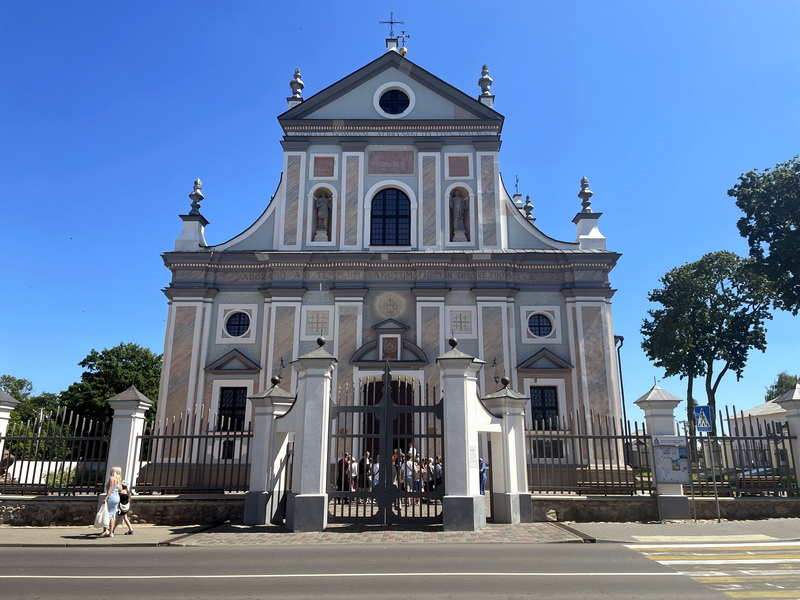
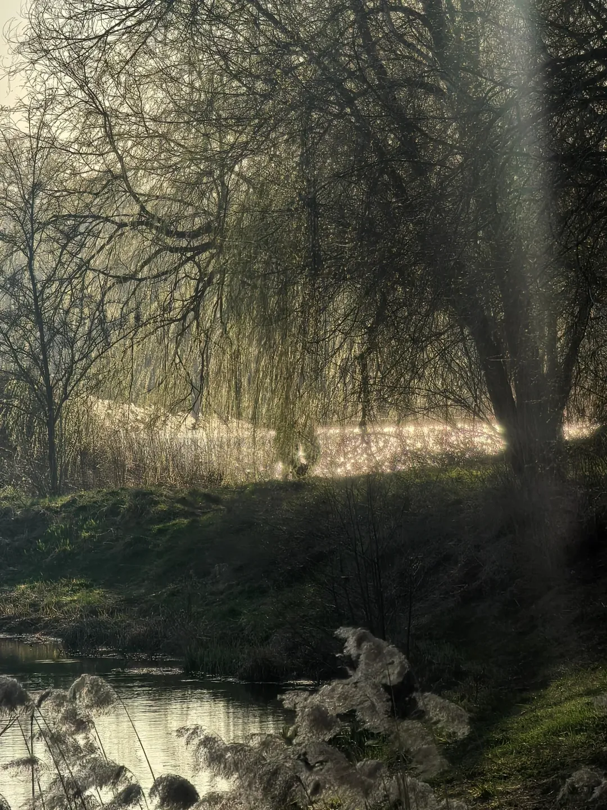
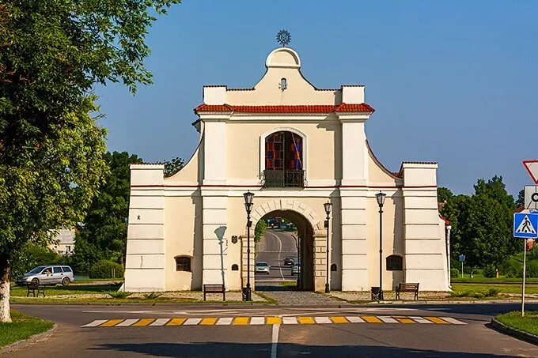
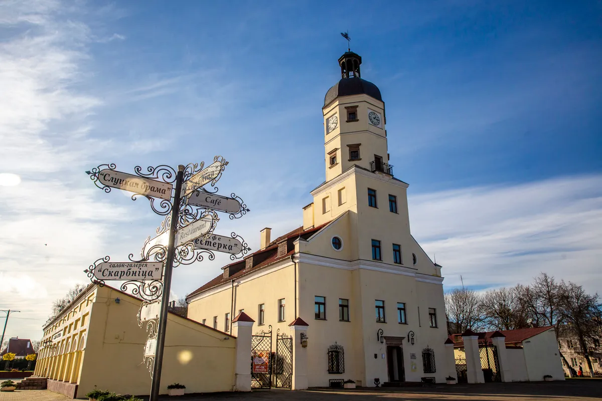
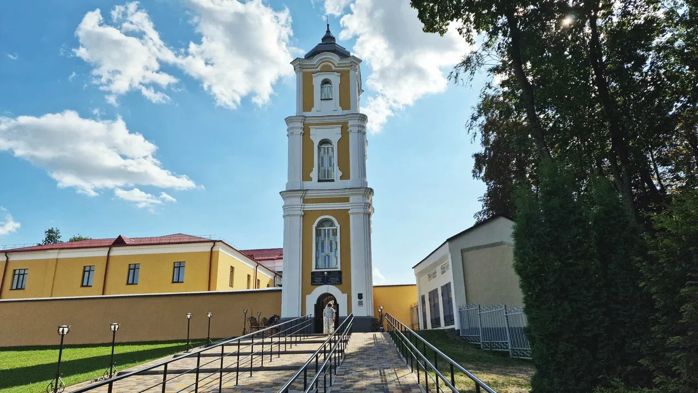
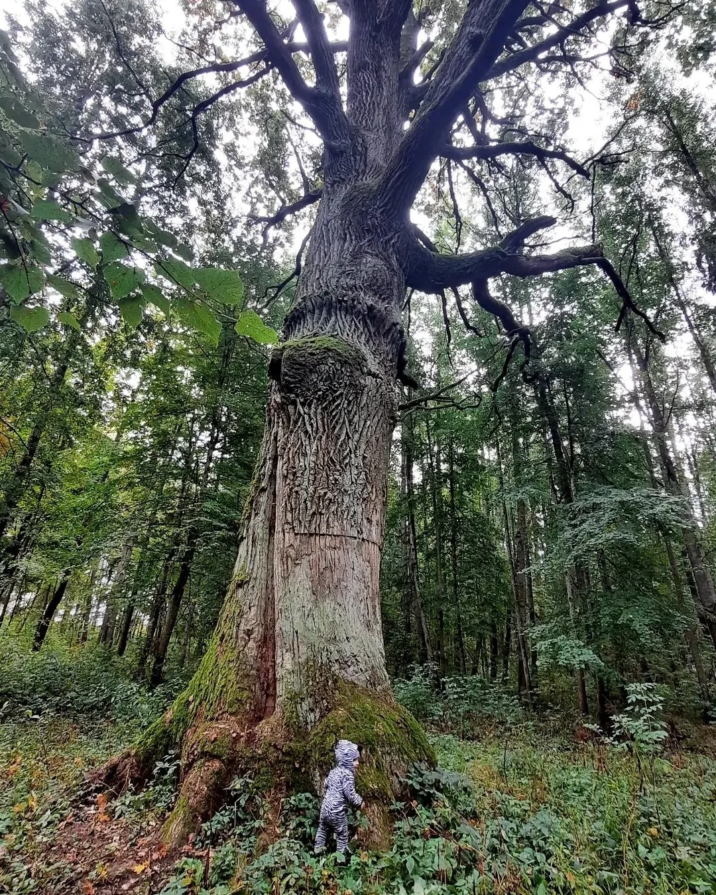

Несвиж · Путеводитель Нясвіж · Даведнік
Большинство туристов видят только замок и уезжают. Но Несвиж — это ещё парк XVI века с каналами, старинные костёлы, замковые пруды и места, о которых не пишут в путеводителях. Большасць турыстаў бачаць толькі замак і з'язджаюць. Але Нясвіж — гэта яшчэ парк XVI стагоддзя з каналамі, старажытныя касцёлы, замкавыя сажалкі і месцы, пра якія не пішуць у даведніках.
Неизвестный Несвиж Невядомы Нясвіж
Несвиж входит в список ЮНЕСКО, и большинство туристов ограничиваются экскурсией по замку. Это понятно — замок действительно впечатляет. Но в трёх километрах от него находится парк Альба, который старше самого замка и о котором не знают даже многие местные жители. Нясвіж уваходзіць у спіс ЮНЕСКА, і большасць турыстаў абмяжоўваюцца экскурсіяй па замку. Але за тры кіламетры ад яго знаходзіцца парк Альба, які старэйшы за сам замак і пра які не ведаюць нават многія мясцовыя жыхары.
А ещё в Несвиже есть Фарный костёл — один из лучших образцов барокко в Беларуси, Слуцкая брама, замковые пруды и тихий городской центр, который приятно пройти пешком. А яшчэ ў Нясвіжы ёсць Фарны касцёл — адзін з лепшых узораў барока ў Беларусі, Слуцкая брама, замкавыя сажалкі і ціхі гарадскі цэнтр, па якім прыемна прайсціся пешшу.
Этот гид поможет увидеть Несвиж полностью — за один день, самостоятельно, без экскурсовода. Гэты даведнік дапаможа ўбачыць Нясвіж цалкам — за адзін дзень, самастойна, без экскурсавода.

Достопримечательности Славутасці
Помимо замка, в Несвиже и его окрестностях есть места с не менее богатой историей — просто о них меньше знают. Акрамя замка, у Нясвіжы і яго наваколлі ёсць месцы з не менш багатай гісторыяй — проста пра іх менш ведаюць.

Загородная резиденция Радзивиллов XVI века. Первый зоопарк Беларуси с леопардами и обезьянами. Восемь каналов звездой от круглого острова — видны из космоса до сих пор. Старейшая парковая аллея страны. И вековые дубы в три обхвата. Загарадная рэзідэнцыя Радзівілаў XVI стагоддзя. Першы заапарк Беларусі з леапардамі і малпамі. Восем каналаў зоркай ад круглай выспы — відаць з космасу да гэтага часу. Найстарэйшая паркавая алея краіны.

Один из лучших образцов барокко в Беларуси, построен тем же архитектором что и дворец в Альбе — итальянцем Бернардони в 1587–1593 годах. В крипте похоронены 97 представителей рода Радзивиллов. Рядом с замком, не пропустите. Адзін з лепшых узораў барока ў Беларусі, пабудаваны тым самым архітэктарам што і палац у Альбе — італьянцам Бернардоні ў 1587–1593 гадах. У крыпце пахаваны 97 прадстаўнікоў роду Радзівілаў.
ЮНЕСКО · Рядом с замком ЮНЕСКА · Побач з замкам
Система прудов вокруг замка создана Радзивиллами как оборонительный ров. Лучший вид на замок — именно с берега прудов. Лебеди, утки, тишина. Сістэма сажалак вакол замка створана Радзівіламі як абарончы роў. Лепшы від на замак — менавіта з берага сажалак. Лебедзі, качкі, цішыня.
Бесплатно · У замка Бясплатна · Каля замка
Единственные сохранившиеся городские ворота Несвижа XVII века. Служили главным въездом в город со стороны Слуцка. Скромный, но подлинный памятник — мимо проходят почти все, но мало кто останавливается. Адзіная захаваная гарадская брама Нясвіжа XVII стагоддзя. Служыла галоўным уездам у горад з боку Слуцка. Сціплы, але сапраўдны помнік.
XVII век
Одна из немногих сохранившихся ратуш Беларуси. Несвиж получил Магдебургское право в 1586 году — одним из первых городов страны. Ратуша на рыночной площади помнит ярмарки и суды Радзивиллов. Адна з нямногіх захаваных ратуш Беларусі. Нясвіж атрымаў Магдэбургскае права ў 1586 годзе — адным з першых гарадоў краіны.
Центр города Цэнтр горада
Основан в 1591 году Эльжбетой Радзивилл. Здесь жила и писала пьесы Франциска Урсула Радзивилл — первая женщина-драматург в истории Великого Княжества Литовского. Заснаваны ў 1591 годзе Эльжбетай Радзівіл. Тут жыла і пісала п'есы Францішка Урсула Радзівіл — першая жанчына-драматург у гісторыі Вялікага Княства Літоўскага.
XVI век
Главное открытие Несвижа Галоўнае адкрыццё Нясвіжа
Пока туристы стоят в очереди к замку, в трёх километрах от него в тишине стоят дубы, которым 500 лет. По каналам, прокопанным вручную в XVIII веке, сегодня плавают утки и лебеди. А главная аллея парка — старейшая в Беларуси. Пакуль турысты стаяць у чарзе да замка, за тры кіламетры ад яго ў цішыні стаяць дубы, якім 500 гадоў. А галоўная алея парку — найстарэйшая ў Беларусі.
Альба не раскручена, не огорожена и не монетизирована. Сюда можно приехать просто так — походить по лесным дорожкам, найти вековые дубы и почувствовать себя первооткрывателем. Альба не раскручана, не агароджана і не манетызавана. Сюды можна прыехаць проста так — пахадзіць па лясных дарожках, знайсці вякавыя дубы.
Маршрут Маршрут
Оптимальный маршрут чтобы увидеть и замок, и Альбу, и исторический центр — без спешки, с паузами на обед. Аптымальны маршрут каб убачыць і замак, і Альбу, і гістарычны цэнтр — без спешкі, з паўзамі на абед.
Начните с замка пока нет толп. Экскурсия по залам ~1,5 часа. Потом пройдите вокруг прудов — лучший вид на замок с воды.Пачніце з замка пакуль няма натоўпу. Экскурсія па залах ~1,5 гадзіны. Потым прайдзіце вакол сажалак.
→ Билеты лучше купить онлайн заранееКвіткі лепш купіць онлайн загадзяЗайдите в Фарный костёл — 10 минут пешком от замка. Загляните в крипту Радзивиллов. Потом рыночная площадь, ратуша, Слуцкая брама.Зайдзіце ў Фарны касцёл — 10 хвілін пешшу ад замка. Зазірніце ў крыпту Радзівілаў. Потым рынкавая плошча і Слуцкая брама.
В центре города несколько кафе. Попробуйте драники — это обязательная программа в Беларуси.У цэнтры горада некалькі кавярняў. Паспрабуйце дранікі — гэта абавязковая праграма ў Беларусі.
Приезжайте на машине или такси (7 минут). Пройдите по главной аллее до круглого озера с островом. Найдите вековые дубы — они в глубине парка. Возьмите резиновые сапоги если после дождя.Прыедзьце на машыне або таксі (7 хвілін). Прайдзіце па галоўнай алеі да круглага возера з выспай. Знайдзіце вякавыя дубы — яны ў глыбіні парку.
→ Координаты входа: 53.202766, 26.642774Каардынаты ўваходу: 53.202766, 26.642774Вернитесь в центр, зайдите в монастырь. Завершите день прогулкой вдоль прудов на закате — это лучшее время для фотографий замка.Вярніцеся ў цэнтр, зайдзіце ў кляштар. Завяршыце дзень прагулкай уздоўж сажалак на захадзе сонца.
Практическая информация Практычная інфармацыя
Лучшее время — май–сентябрь. Парк Альба особенно красив в мае (первая зелень) и в сентябре (золото листвы). Зимой тоже стоит ехать — заснеженные дубы невероятны. Лепшы час — май–верасень. Парк Альба асабліва прыгожы ў маі і ў верасні. Зімой таксама варта ехаць — заснежаныя дубы неверагодныя.
Из Минска ~120 км по трассе М1. Автобус Минск–Несвиж ежедневно. Замок и центр — пешком. До Альбы — машина или такси 7 минут (3,9 км). З Мінска ~120 км па трасе М1. Аўтобус Мінск–Нясвіж штодня. Замак і цэнтр — пешшу. Да Альбы — машына або таксі 7 хвілін (3,9 км).
Для Альбы: удобная обувь (лучше резиновые сапоги после дождя), вода, телефон с картой. Парк не оборудован инфраструктурой — это его очарование. Для Альбы: зручная абутак (лепш гумовыя боты пасля дажджу), вада, тэлефон з картай. Парк не абсталяваны інфраструктурай — гэта яго чароўнасць.
Парк Альба Парк Альба
Альба — не просто достопримечательность. Это место, которое восстанавливают волонтёры. Приехать, рассказать друзьям или прийти на субботник — любая помощь важна. Альба — не проста славутасць. Гэта месца, якое аднаўляюць валанцёры. Прыехаць, расказаць сябрам або прыйсці на суботнік — любая дапамога важная.